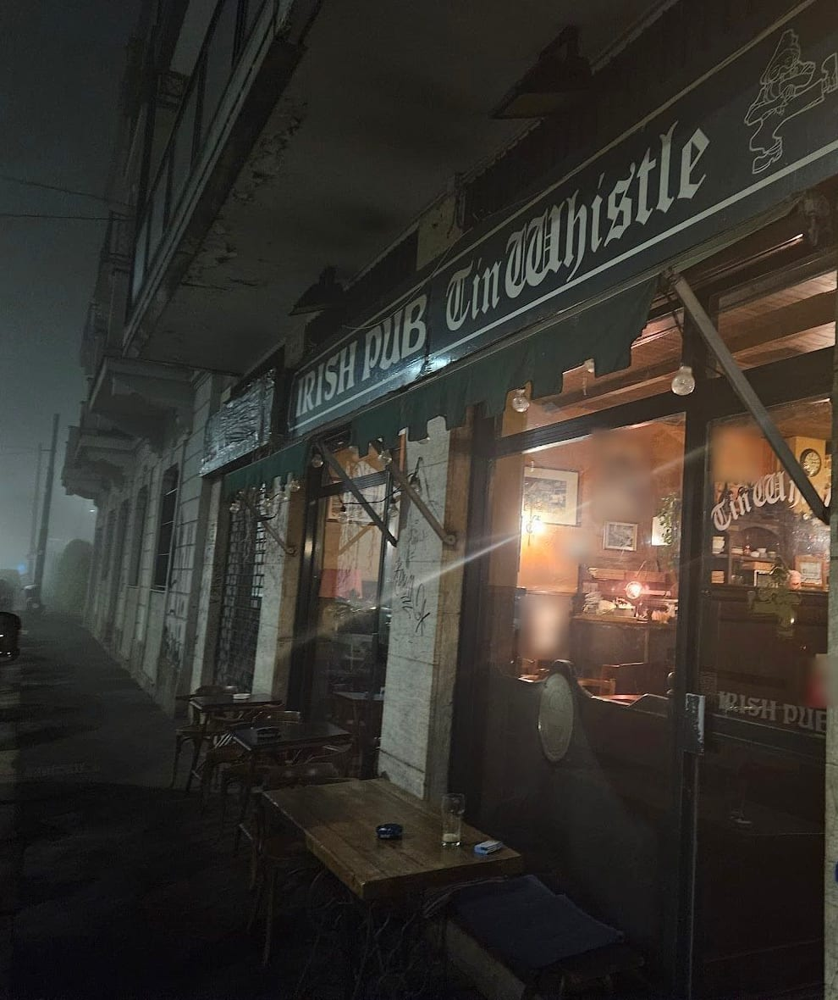
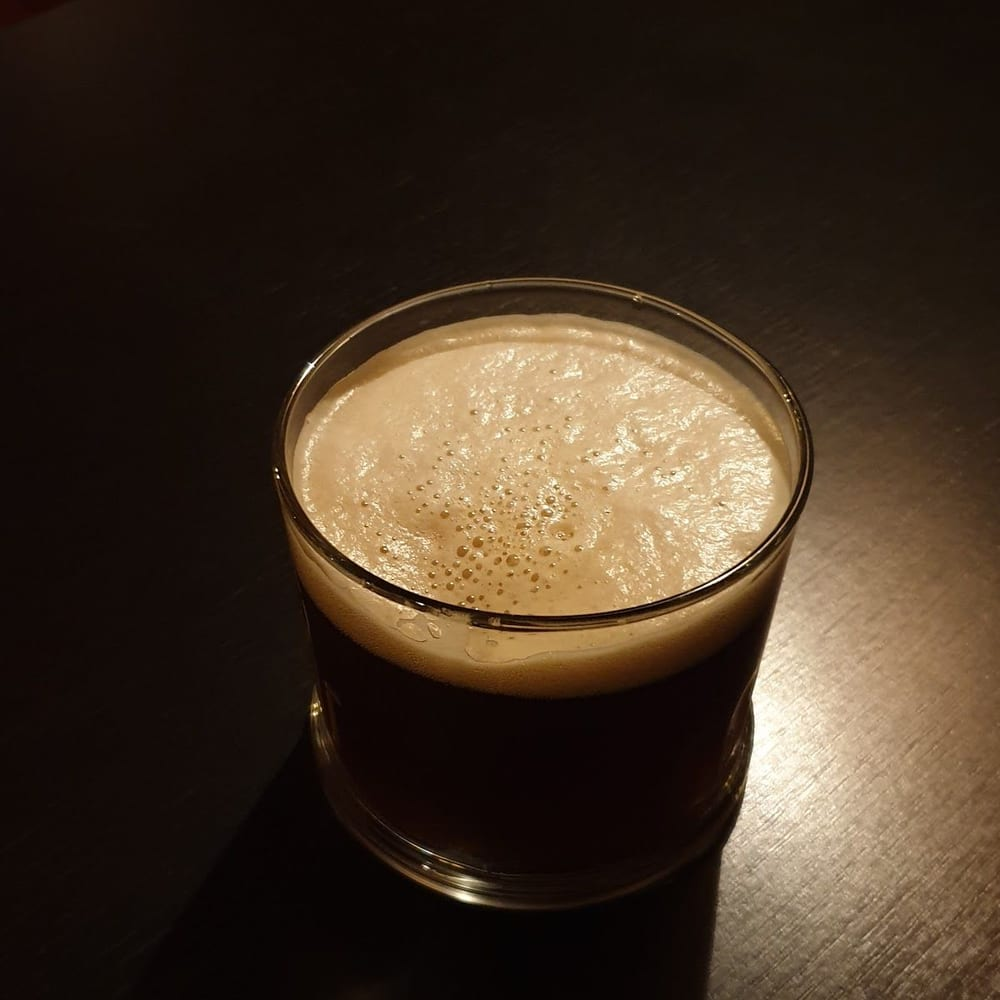
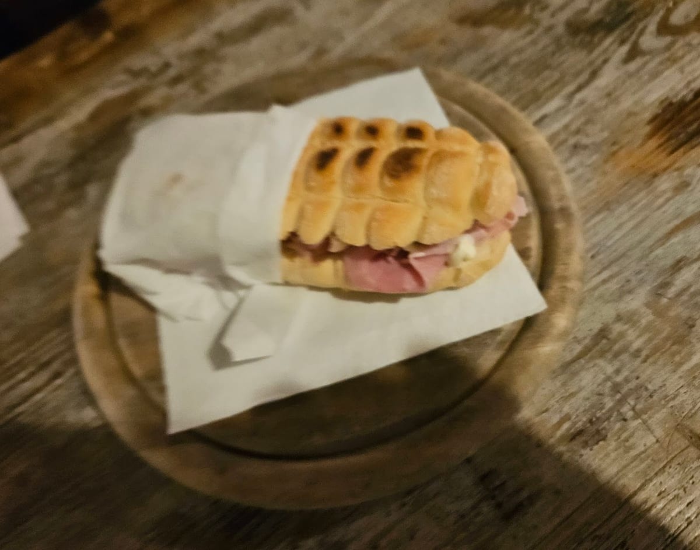

Via Lodovico il Moro 55, Milano · sul Naviglio Grande
Birre irlandesi, spillate a regola d'arte.
Il pub irlandese sulla via lungo il Naviglio Grande, verso Ronchetto: legno scuro e pareti ocra, le birre alla spina, i panini, le piadine e le pinse. A pranzo nei giorni feriali, la sera fino alle 2.
«Tanto legno, tanta Irlanda, ottima birra» da una recensione su Google
4,4 su Google, 391 recensioni
Dal lunedì al sabato, la sera fino alle 2

Feadóg stáin Il tin whistle
Il tin whistle è il flautino di latta a sei fori della musica tradizionale irlandese: in irlandese si chiama feadóg stáin. Il pub ne porta il nome, e nel suo marchio un folletto lo suona.
Qui suona l'inizio di due gighe tradizionali, nota per nota, e sotto si scrive la tavola delle diteggiature: un pallino pieno è un foro chiuso, uno vuoto è aperto; il puntino sulla lettera, la seconda ottava. Scegliete un brano.
Le note dei due brani vengono da thesession.org, le diteggiature dalla tavola del tin whistle in re.
Teach tábhairne Il pub
Un locale piccolo sulla via che costeggia il Naviglio Grande: il soffitto di travi, la boiserie scura, le pareti ocra con le stampe incorniciate, i tavolini tondi e le sedie impagliate.
In un angolo il muso di un'auto bianca d'epoca è diventato un divanetto; appesi in sala, i cartelli a dito per Dublino. Fuori, i tavolini sul marciapiede.
La sala, con le finestre sulla via. Il divanetto ricavato dal muso di un'auto. I cartelli a dito: Dublino, 5.
Le foto vengono dalla loro scheda Google, scattate dai clienti.
Beoir agus bia Da bere e da mangiare
Al banco
- Birre irlandesi alla spina, la Guinness e la Kilkenny
- Birre artigianali, anche di quelle che non si trovano spesso
- Irish coffee e cocktail
- Whiskey irlandese e amari
In cucina
- Panini e piadine, anche vegetariani e vegani
- Hamburger da 200 g
- Pinse
- Insalatone, nachos e taglieri


A pranzo nei giorni feriali, per una pausa veloce; la sera fino alle 2.
A San Patrizio musica dal vivo e «fiumi di birra», come scrivono loro; a volte le partite in TV: lo annunciano sulla loro pagina Facebook.
Quello che c'è lo raccontano i clienti nelle recensioni. Il menù del giorno si chiede al banco.
Léirmheasanna Dicono
4,4 su Google, 391 recensioni
«Stupendo pub in zona navigli, personale gentilissimo e disponibile. Il posto migliore della zona in cui fermarsi a prendere una Guinness!»
Luca Ambrosini Google, 2 anni fa
«Arrivato a milano martedì dopo Pasquetta, alle 00:30 digiuno dalle 12:30, […] tutti chiusi o “abbiamo chiuso ora la cucina” , gentilmente mi dicono che sono ancora aperti.
Bene, che sorpresa! Personale gentile, posto caldo e accogliente quasi intimo, buon cibo ottima birra.
Bravi !»Giuseppe Davide Galli Google, 2 anni fa
«Una delle guinness migliori di Milano.
Buona varietà di birre e di piatti (classici da pub quali piadine hamburger e pinse romane). […]»Andrea Rumoro (Rumo98) Google, 3 anni fa
«Ci torni dopo anni e con molto piacere mi accorgo che nulla è cambiato. Ottime birre e anche il cibo per accompagnarle.
Gestori e personale cordiale, e atmosfera tranquilla che permette di parlare tranquillamente sorseggiando una birra.
Perfetto per staccare dopo il lavoro.»Angelo Vasa Google, 2 anni fa
«ottimo pub in stile Irish. ambiente accogliente, birre e cibo buoni. nota di merito per l'irish coffee, davvero ben fatto!»
Lucrezia Luppichini Google, 2 anni fa
«Il perfetto pub irlandese!
Ottima selezione di birre, arredo fantastico e la Guinnes spillata come fossimo nei verdi campi d'oltre manica. […]
Come stare a casa ma... Meglio!»Dario Passaro Google, 8 anni fa
Dalle recensioni su Google, come sono state scritte. Anche la frase in alto viene da una recensione su Google. Tutte le recensioni su Google
Oscailte Orari e dove
Orari dalla loro scheda Google (settembre 2026): la sera si chiude alle 2 di notte. Per le feste e le serate speciali conviene telefonare.
Le fermate più vicine
- Cavalcavia Don MilaniBus 98110 m
- Via GuintellinoTram 2200 m
- Cavalcavia Don MilaniBus 324 · 325210 m
- Via GiambellinoTram 3430 m
- FrattiniM4760 m
- GelsominiM4850 m
Distanze a piedi in linea d'aria, circa.
- Dove
- Via Lodovico il Moro 55, 20143 Milano, sulla via lungo il Naviglio Grande
- Telefono
- 02 813 7670
- Sui social
- La loro pagina Facebook
Ceisteanna Domande
A che ora aprite?
Dal lunedì al venerdì dalle 11 alle 15:30 e dalle 20 alle 2 di notte; il sabato dalle 20 alle 2. La domenica è chiuso.
Si può pranzare?
Sì, nei giorni feriali: panini, piadine, hamburger, pinse e insalatone, raccontano i clienti.
Ci sono piatti vegetariani?
Sì: panini, pinse e piadine vegetariane e vegane, scrive un cliente su Google. Per il resto chiedete al banco.
Si possono portare i cani?
Sì: sulla loro scheda Google i cani risultano ammessi.
Come si arriva?
Via Lodovico il Moro 55, sulla via lungo il Naviglio Grande: il bus 98 ferma a circa 110 metri, il tram 2 a circa 200, la M4 Frattini è a circa 760 metri.